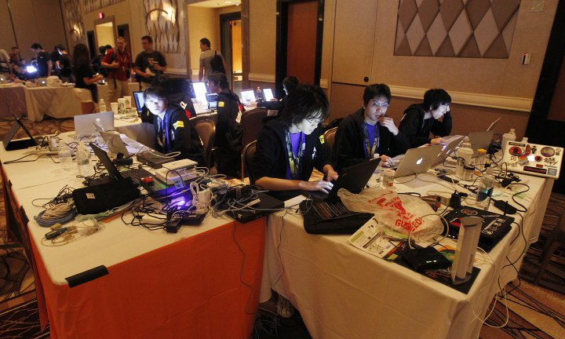

Defonc : La conférence des hackers

La Defcon est la conférence de hacking la plus célébre au monde. Elle se déroule chaque année à Las Vegas aux Etats-Unis, la première édition étant en 1993. Au premiers abords on pourrait se dire "tiens une conférence de geek" ce qui n'est pas du tout le cas ! En effet elle rassemble des professionel de la sécurité imformatique mais également tout pasionné de programmation, de matériel imformatique, bref de tout ce qui peut être hacké.
En lisant cet article vous vous êtes surement demandé que fait-il sur un site qui parle des choses libres ? Et vous avez raison c'est tout a fait légitime de se demander ce que peut bien faire cet article sur ce site? Et bien tout simplement parce que les hackers utilisent des outils libres de droits afin qu'on ne récolte pas leurs informations personnelles mais également (et surtout) parce que la plupart du temps ces outils sont récuperables, modifiables et distribuables librement ce qui fait que ces outils sont toujours au top et libres ! C'est donc naturellement que vient se glisser cet article sur notre site.
Bien que les principaux concours/événements organisés soient des ecapture the flage, où deux équipes s'affrontent et doivent protéger un drapeau représentant de leur réseau et trouver le drapeaux de l'équipe adverse, de nombreux autres concours sont organisés, certains mêmes sont insolites. C'est le cas du concour où les participants devaient réfléchir à comment refroidir le plus efficacement une bière au Nevada, là ou la chaleur y est très intense. Certains sont plus "normaux" comme le crochetage de serrure,le piratage de systèmes informatique ou ont pour thème les robots.
Donc si vous êtes fan de sécurité, de systèmes informatique et de défi mais que vous ne savez toujours pas où passer vos vacances d'été vous venez de trouver la déstination ! Info à savoir cette année elle se déroule du 27 au 30 juillet à Las Vegas aux États-Unis.